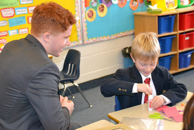

Author: Daniel Wen
Crafts with Buddies

Behind the Scenes: The Pre-U Play
I had the chance to speak with the talented Sol Azrieli about the Pre-U play. For those unaware, the play is a comedy that reflects our lives as Pre-U students. The plot revolves around a character named Andrew Waxman and his social and academic escapades. Sol has made it explicit that Andrew is the only character based on a real person.
“From the onset,” he said, “I knew that the main character would be Andrew Waxman. And his best friend would be William Blake.”
The primary antagonist, whose ethnicity (and thereby, whose name) is not yet fixed, appeared in the very early drafts. Most of the other characters were then added as the story unfolded under the author’s skillful hand.
The Dichotomy of Interview Styles in the US and UK
Sitting at my first US university interview, I marvelled at the great disparity in the interview styles of American schools versus their British counterparts. This gulf between education systems is as deep and wide as the ocean that separates the two nations. Had I not felt nervous, I would have found the contrast comical.
Retrospectively, I should have been more astonished by my UK interviews. However, since I experienced them first, I had no preconceptions on what constitutes an interview. To their credit, Imperial College London conducted a session with me that qualified as an interview. Although the discussion was heavily academic, I enjoyed thinking out loud about how I would go about solving interesting scientific problems.
My interview with Cambridge was another matter; I would not call it an interview, but rather an interrogation.
Halloween

The Semantics of “Pre-U”
I underwent a brief moment of epiphany when I discovered the semantics of using the name “Pre-University” over “Grade 12.” When viewed as a preparation for university instead of merely a final year of high school, LCC’s grandfathered programme has genuine reasons for its otherwise quirky characteristics. As students, we must forgo comfort and commit ourselves to the rigorous training.
Terry Fox Run with Buddies

University Visits and Events
Archived